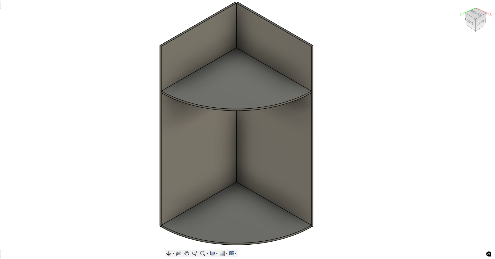

Verkefni 2
Vínylskurður
Í vínylskurðs hluta verkefnisins átti einfaldlega að vínyl skera eitthvað sem var minna en 100x50cm. Ég ákvað að skera út merki úr tölvuleik sem að ég hef gaman af, ég byrjaði á að finna góða mynd af merkinu á netinu sem má sjá hér að neðan:
Síðan yfirfærði ég myndinna yfir í Inkscape og lagfærði hana svo hægt væri að skera hana út með vínyl skeranum. Hér að neðan má sjá hvernig myndin endaði í inkscape(línu þykktin er 0.1 mm í stað 0.015 mm til að hægt væri að sjá merkið alminnilega).
Síðan var þessi mynd exportuð sem SVG og vínylskerinn í VR-III notaður til þess að skera út merkið. Hér að neðan má sjá hvernig límiðin leit út eftir skurðin og svo límdan á PS tölvuna mína.

Geislaskurður
Markmiðið með þessum hluta verkefnisins er að hanna geirnelgt, parametískt módel. Módelið þarf að vera skalanlegt á mismunandi máta og skorið út með geislaskera. Fyrir verkefnið mátti velja úr ýmsum efnivið en ég valdi 3mmx500mmx500mm akríl plötu. Eftir mikla umhugsun ákvað ég að búa til nýjan sturtu sápu haldara inná heimilð mitt þar sem okkar er orðin svolítið sjúskaður(MYND AF GAMLA???).
Áður en ég byrjaði á hönnuninni þurfti ég að mæla kerfið á geislaskeranum, til þess að gera það teiknaði ég eftirfarandi hlut í fiusion 360:
Þessir kuppar voru síðan skornir út með geislaskeranum og heildar lengd þeirra mæld. Munurinn á lengdinni fyrir og eftir geislaskurð var síðan notaður til að finna kerfið. Niðurstaðann sem fékkst var að kerfið sé 0,44 mm. Til að meta hvort að þessar mælingar væru réttar hannaði ég einfalt pressfit módel og skar það út
0.44mm kerfið reyndist vera of stórt eins og sjá má að módelinu úr svarta akrílnum, en ég prófaði nokkur önnur kerf til viðbótar og að lokum kom í ljós að kerfið var 0.XXX mm
Þegar rétt kerf var fundið þá byrjaði ég að hanna módelið í fusion 360. Þar sem hönnunin þurfti að vera parametrísk hafði ég mér þetta Youtube myndband til hliðsjónar við hönnunina. Fyrst teiknaði ég botn plötuna sem má sjá hér að neðan:
Til þess að búa til teinana fyrir pressfitið notaðsit ég við rectangular pattren skipunina í fusion. Útfrá þessari teikningu notaði ég extrude skipunina til að búa til botnplötunna og hliðar veggina.
Síðan ákvað ég að bæta við efri hæð til að hægt væri að geyma fleiri sápur, til þess notaði ég pettern skipunina og skar út holur í veggjunum til að festa efri plötunna.
Næst bæti ég við einföldum girðingum á báðum hæðum til að minnka líkunar á því að sápunar detti úr.
Næst notaði ég aftur pattern til þess að bú til teinanna sem festa báðar hliðarplötunar saman teikningunna af því má sjá hér að neðan ásamt loka útkomunni.
Skilirði fyrir þetta verkefni var að nota parametríska hönnun og ég gerði það að sjölfsögðu fyrir þetta módel. Parametrarnir sem ég notaði eru eftirrfarandi:
Að lokum var hönnunin útbúinn fyrir geislaskeran með því að leggja alla partanna flat. Síðan nýti ég mér aðferðinna í þessu Youtube myndbandi til gera ráð fyrir kerfinu frá geislaskeranum.
Eftir skurð og samsetningu leit sturstusápu haldarinn svona út:
Hér er síðan hlekkur á gagnabanka þar sem hægt er að fá aðgang að öllum fusion skjölunum